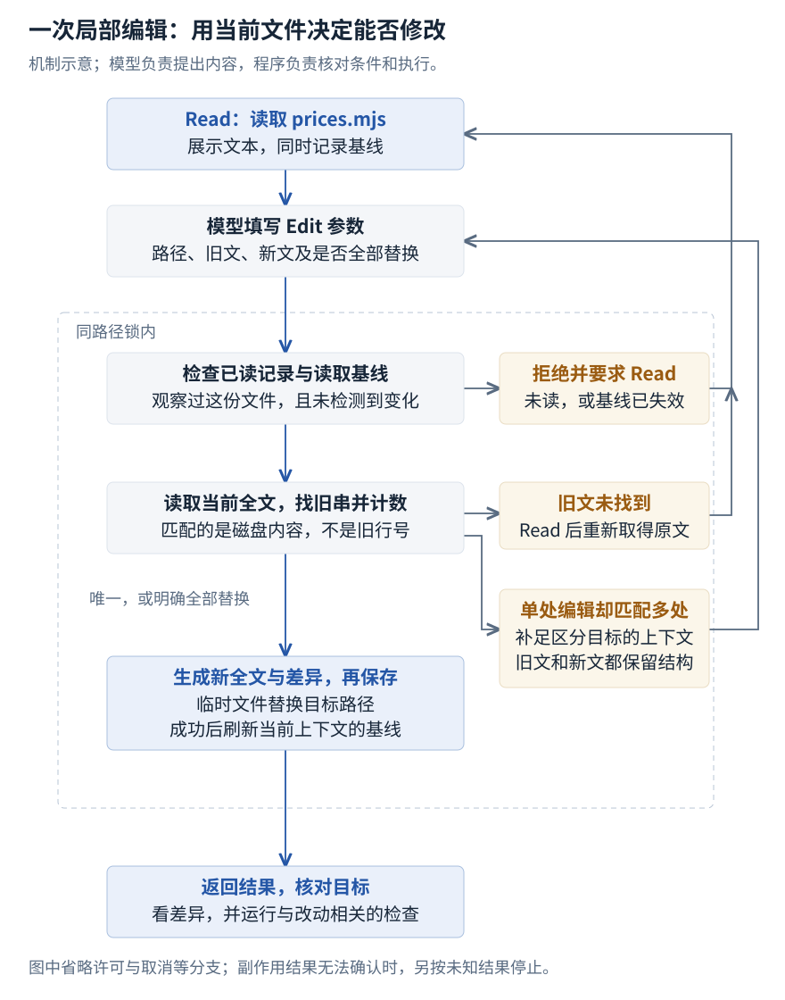
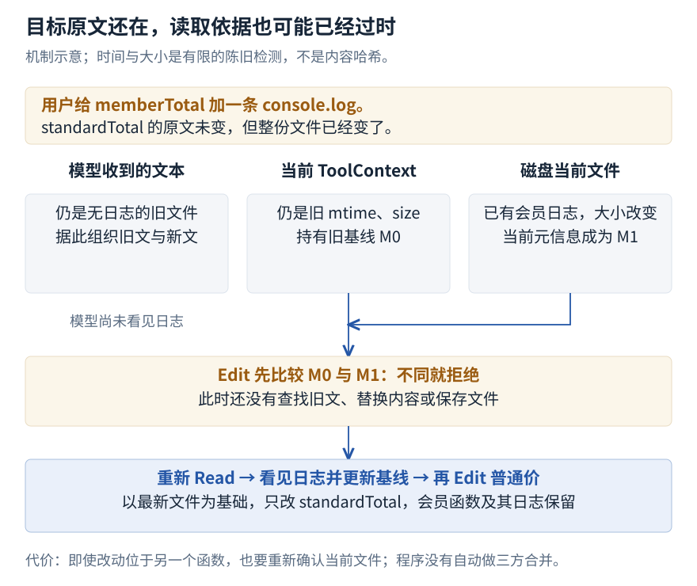
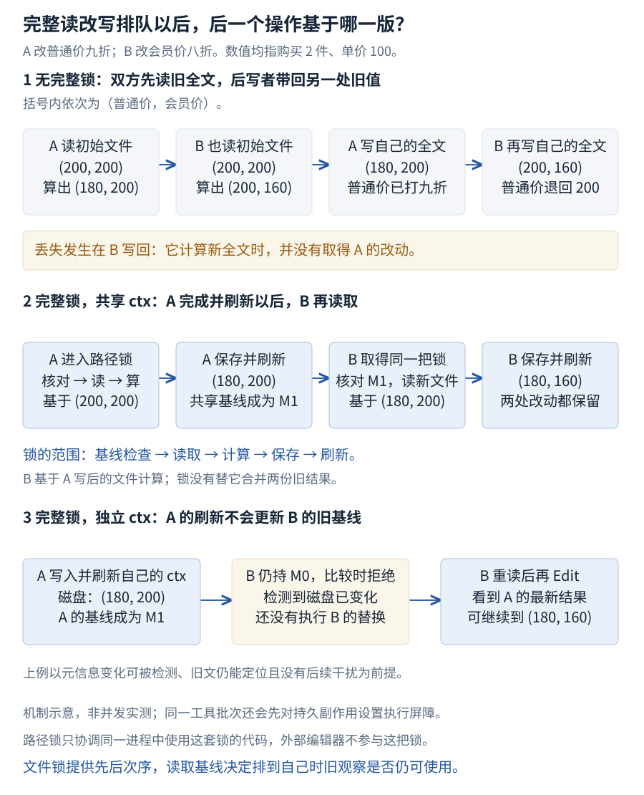

文件编辑：找准目标，保留已有修改
普通价函数还在原处，同事给会员函数加了一行日志。现在提交刚准备好的 Edit，程序凭什么决定能不能写？
同事只改了另一个函数，这次 Edit 还能写吗？
1.1 旧文仍然唯一，读取记录已经落后
上一章沿报错找到了写入前的基线检查。这一次你已经读过 prices.mjs，也用完整的 standardTotal 函数定位普通价。正要提交修改，同事保存了同一个文件。下面是按源码推演的三个时刻。
| 时刻 | 这次修改手上的材料 | 磁盘上的文件 |
|---|---|---|
| 你刚读完 | 读到普通价和会员价两个函数，工具记下文件当时的修改时间和大小。 | 两个函数都按原价计算。 |
| 同事保存 | 你准备的旧文仍是完整的普通价函数。 | 会员函数多了一行日志，普通价函数一字未变，文件变大。 |
| 你提交 Edit | 只把普通价乘以 0.9，旧文可以唯一匹配。 | 会员日志需要保留。 |
第一次写入会发生吗？如果原样再发一次 Edit，哪份材料还停在同事保存之前？
核对写入条件和下一步
工具先核对上次 Read 记下的文件状态。大小已经变化，这次调用会在写入前被拒绝。重发相同参数仍沿用旧记录。重新 Read，确认新增日志及普通价函数的当前内容，再提交只改普通价的 Edit。写完还要检查日志仍在，并试算两种价格。
第 1 篇的编辑曾因两处都有相同的短旧文而停下，用完整函数才能指明目标。这里即使已经指明目标，也要先核对文件版本。下面的工具实录可以回看定位过程。
回看文件没有中途变化时，Read 和两次 Edit 的实际输入输出
export function standardTotal(count, price) {
return count * price;
}
export function memberTotal(count, price) {
return count * price;
}只把 standardTotal 的结果乘以 0.9；memberTotal 保持原样。数量为 2、单价为 100 时，普通价应该是 180，会员价仍然是 200。
人知道要改普通价，工具收到的输入是否也足以分清目标？先调用当前 RuoCun 的 Read，取得文件原文：
{
"path": "prices.mjs"
}1 export function standardTotal(count, price) {
2 return count * price;
3 }
4
5 export function memberTotal(count, price) {
6 return count * price;
7 }
8 如果 Edit 只拿到下面的短旧文，它就同时指向两个函数：
{
"path": "prices.mjs",
"old_string": "return count * price;",
"new_string": "return count * price * 0.9;"
}old_string 在 prices.mjs 出现 2 次，不唯一。只改一处时，把周围未改动的文字同时带入 old_string 和 new_string。要替换所有匹配时请使用 replace_all。第一次调用没有改文件。工具没有猜测“普通价也许就是第一处”，而是在无法区分目标时停下，把需要补的信息交还给调用者。
本次只改普通价，因此第二次把 standardTotal 的函数声明和函数体一起放进旧文，新文保留相同结构，只增加折扣：
{
"path": "prices.mjs",
"old_string": "export function standardTotal(count, price) {\n return count * price;\n}",
"new_string": "export function standardTotal(count, price) {\n return count * price * 0.9;\n}"
}这次旧文只出现一处。Edit 保存修改，实际返回前缀和差异：
已编辑 prices.mjs(替换 1 处,行 1)
- 1 export function standardTotal(count, price) {
- 2 return count * price;
- 3 }
+ 1 export function standardTotal(count, price) {
+ 2 return count * price * 0.9;
+ 3 }
4
5 export function memberTotal(count, price) {
6 return count * price;再次 Read，普通价已有 * 0.9，会员价仍是原表达式。随后用 Node 导入两个函数，分别传入 (2, 100)，实际输出：
{"standardTotal_2_100":180,"memberTotal_2_100":200}普通价 180、会员价 200。diff 帮助我们看“文本改到了哪里”，运行结果继续核对“只给普通价打折”，两份证据各有用途。
Read 与 Edit 的分工
2.1 为什么提供原文，而不让模型计算修改行号
本次普通价的 return 在第 2 行。直接要求“修改第 2 行”看起来很短；但文件开头加四行说明后，函数就向下移动了。旧行号仍是 2，却不再代表那段表达式。Read 返回行号是帮助阅读，不是保证以后仍指向同一内容。
也可以让模型重新输出整份文件。七行文件成本不明显；几百行文件为了增加一个 * 0.9，却要把不该改变的内容也重写一遍。如果用户刚给会员价加了日志，依据旧全文重写还可能把日志删掉。Write 能表达完整文件，也要求调用者对整份最终内容负责。
让模型生成带行号和范围的补丁，还要它组织格式、计算位置。RuoCun 把工作拆开。模型指定旧文与新文，程序在当前文件中查找、计数、替换并生成差异。能根据文字确定计算的步骤留在执行端。
如果只给两个函数共有的短旧文，工具就无法分清目标。带上普通价函数的声明才提供了定位信息。工具能检查字符出现在哪里，仍不知道用户为什么打折。文件、函数和新表达式是否符合目标，继续由模型和读者核对。
2.2 Read 返回文本并记录文件状态
Read 返回给模型的原文带着行号。代码定位篇已经用 offset 和 limit 从报错行回到函数定义。这里换一个问题：拿到的那几行怎样进入 Edit，程序又怎样判断文件在读后变过？
查阅 Read 的参数、默认值与展示范围
schema=objectSchema({
"path": {"type": "string", "description": "相对工作区根目录的文件路径"},
"offset": {"type": "integer", "minimum": 1, "description": "起始行号(1-based,含)"},
"limit": {"type": "integer", "minimum": 1, "description": "最多读取的行数"},
}, ["path"]), capability="read", approval="auto", handler=_read,| 参数 | 类型与要求 | 行为 |
|---|---|---|
path | 必填字符串 | 本例目标是 prices.mjs。 |
offset | 可省略整数，至少 1 | 从哪行开始展示，包含该行；省略从第 1 行开始。 |
limit | 可省略整数，至少 1 | 最多展示多少行；处理函数省略时按 2000 行计算。 |
schema 规定输入形状，处理函数决定省略时的行为。这里没有写 default，代码仍会取 2000。七行价格文件一次可看完；若有 2500 行，看到续读提示后可以继续：
{"path":"prices.mjs","offset":2001,"limit":500}该范围只限制向模型展示多少行。程序记录的文件状态覆盖整份文件。超过 5 MiB 且没有分段参数时，Read 先提示分段读取。过长单行也会截断。
工具实录中原文左侧的 1 是 Read 为展示附加的行号。Edit 旧文应从 export function 开始。复制行号进去，就会寻找文件里不存在的字符。
文件路径和文件内位置还要分开。schema 描述“相对工作区根目录”，实际解析却优先使用 ctx.cwd，缺少当前目录才退回根目录：
absolute, external = await asyncio.to_thread(classifyPath, ctx.cwd or ctx.workspaceRoot, p)两个目录都叫 prices.mjs，要先选对文件；同一文件向下移四行，才是内容定位的问题。唯一旧文不能替模型在两个业务文件间选择。读写许可也另行核对。
读取记录保存在程序的 ToolContext 中。readFiles 记已读绝对路径，readMeta 保存读取时的时间与字节数。
ctx.readFiles.add(absolute)
ctx.readMeta[absolute] = {"mtime": stat.st_mtime_ns / 1_000_000, "size": stat.st_size}mtime 来自读取前的 stat，纳秒值换算为毫秒；size 是字节数。这份后台读取记录会回传业务上下文，后续写入据此比较状态。模型说“我读过”不会自动登记路径；程序记为已读也不表示模型理解了所有内容。
2.3 Edit 用旧文定位，用新文替换
本次成功参数中的函数头、函数体、花括号全属于替换片段。先看定义：
schema=objectSchema({
"path": {"type": "string", "description": "相对工作区根目录的文件路径"},
"old_string": {"type": "string", "description": "要被替换的原文(需唯一)"},
"new_string": {"type": "string", "description": "替换成的新文本"},
"replace_all": {"type": "boolean", "description": "是否替换全部出现"},
}, ["path", "old_string", "new_string"]), capability="write", approval="required", handler=_edit,| 参数 | 类型与要求 | 作用 |
|---|---|---|
path | 必填字符串 | 目标文件，先解析路径与许可。 |
old_string | 必填字符串，执行另拒绝空串 | 实际原文，保留需要的缩进、换行和上下文。 |
new_string | 必填字符串 | 整个旧串的替换内容；空串表示删除。 |
replace_all | 可省略布尔值 | 省略或 false 要求单处；true 表示有意替换全部相同实际旧串。 |
capability 把 Edit 标为写操作，供执行器分组和权限层裁决。定义里的 approval 是声明标签，实际授权还要看路径和当前权限策略。进入处理器后，还有已读记录、基线和匹配检查。

机制流程示意。
打开完整图解文本匹配与差异核对
3.1 单处 Edit 需要唯一匹配
工具演示中，只给一行短旧文会同时匹配两个函数。处理器取得实际匹配串，再数它在全文中出现几次：
old = findActualString(raw, requested)
if old is None:
raise ToolRejected(f"未找到 old_string:{args['path']}")
count = raw.count(old)
if count > 1 and not args.get("replace_all"):
raise ToolRejected(f"old_string 在 {args['path']} 出现 {count} 次，不唯一。"
"只改一处时，把周围未改动的文字同时带入 old_string 和 new_string。"
"要替换所有匹配时请使用 replace_all。")
next_text = raw.replace(old, args["new_string"])raw 是锁内重读的当前全文，程序先找实际要替换的旧文，再数出现次数。「单处 Edit 要求实际旧文在当前全文中恰好出现一次」。第一次 count 为 2，调用又没要求批量替换，程序在保存前拒绝。第二次带上 standardTotal 的结构，次数变成 1，工具才有确定的替换位置。
如果工具默认替换第一个匹配，这次恰好会改对，因为普通价排在前面。把会员价函数移到前面，同一条请求就会改错，试算变成普通价 200、会员价 180。唯一性检查把这种依赖文件排列的猜测变成一次明确拒绝。代价是多交一点上下文，失败后可能还要多一轮请求。工具确定了改哪一段，改动是否符合需求仍要看差异和试算。
改用 replace_all=true 虽然能让两处匹配通过，却会把会员价也乘 0.9。它表达的是“两类价格都打折”，不能作为原来单处任务消除报错的捷径。反馈给出补上下文和全部替换两种动作，仍须根据需求选择。
函数向下移动几行后，重新读取仍可根据这段原文定位。如果移动发生在 Read 之后，工具先用读取基线确认这次依据是否仍然有效，然后才进入文本匹配。
3.2 扩大旧文时，新文为什么也要保留函数
假如模型把函数声明当成“仅用于定位的提示”，提交：
{
"path": "prices.mjs",
"old_string": "export function standardTotal(count, price) {\n return count * price;\n}",
"new_string": "return count * price * 0.9;"
}其他检查通过后，整个旧串都被一行新文替换，结果成为：
return count * price * 0.9;
export function memberTotal(count, price) {
return count * price;
}普通价函数声明和花括号消失，return 落在函数之外。raw.replace 会换掉整个匹配片段。所以成功请求在新文保留完整结构，只给返回表达式增加折扣。
参数类型合法、旧文唯一、新程序正确是三个判断。前两项通过不会补回被删的结构，更不会证明业务逻辑符合目标；diff 和相关运行仍要核对。
3.3 找不到旧文时重新读取文件
从初始价格文件出发，如果请求把旧文写成 return count * price * 0.95;，文件本来没有九五折表达式。工具找不到它，会在保存前拒绝，原因是 未找到 old_string:prices.mjs。
重复发送同一个不存在的旧串，不会增加定位信息。小文件应重新 Read，长文件可先搜索再读取目标附近。若最新普通价仍是原始表达式，就用这份实际原文和完整函数结构组织请求；若已经换成另一种实现，则要结合当前代码重新决定怎样满足九折要求。
把 Read 的展示行号复制进去也是同类错误：请求包含磁盘原文中没有的字符。先恢复实际依据，才能重新提出可匹配的编辑。
3.4 形近字符回退后按实际旧文计数
直引号和弯引号、半角和全角空格，也可能在复述时发生偏差。完全逐字符拒绝简单，却会让这些机械错误造成反复调用。当前实现先精确查找，失败后才尝试列明字符组的回退：
def findActualString(raw: str, old: str) -> str | None:
if not old:
return None
return old if old in raw else _lookalike_match(raw, old)例如备注里是 “普通价”，请求使用直引号 "普通价"，回退可取得文件中的实际文字，后续再对这个实际字面串计数和替换。它不会把 count * price 和 calculateTotal() 按业务意义猜成同一段内容。
形近回退有 5000 个 UTF-16 代码单元的长度上限，精确找到的旧串不受这项统一限制。程序取一个实际候选，再数这个字面串，没有枚举所有不同字形候选作语义消歧。最可靠的依据仍是 Read 原文。
3.5 用 diff 核对替换范围
工具演示的成功差异里，函数声明在减号和加号两边都出现，会员价则是附近上下文。声明没有改变却被标进替换片段，是因为替换单位包含整个函数；展示的是这次替换涉及的文本，不是逐个不同字符。
减号对应旧片段，加号对应新片段，空格开头是上下文。行号由程序根据当前全文计算，模型不用自行计算补丁偏移。处理器先生成新全文和差异，再保存并刷新基线：
start_line = raw[:raw.index(old)].count("\n") + 1
diff = "\n```diff\n" + "\n".join(buildEditHunk(raw, old, args["new_string"])) + "\n```"
atomicWrite(absolute, next_text)
refreshReadBaseline(absolute, ctx)
if ctx.lang == "en":
return f"Edited {args['path']} ({count} replacement(s), line {start_line}){diff}"
return f"已编辑 {args['path']}(替换 {count} 处,行 {start_line}){diff}"模型提供旧文与新文，程序用 diff 报告具体替换。模型和用户据此核对函数结构与改动范围。演示最后运行两个函数，用 180／200 进一步确认普通价打了折、会员价保持原样。
当前 buildEditHunk 围绕第一处匹配生成局部片段，replace_all 却替换全部相同实际旧串。真正批量修改时，不能把首处差异当作完整变化清单，还应读取或搜索其他位置，再运行相关检查。
读取基线与文件变更
4.1 普通价原文还在，为什么仍会拒绝
下面从最初未打折的文件重新开始，作机制推演。模型 Read 后准备改普通价，用户却先给会员价加了一条日志：
export function standardTotal(count, price) {
return count * price;
}
export function memberTotal(count, price) {
console.log("member total requested");
return count * price;
}普通价原文没变，仍可唯一定位。找得到原文，并不能表示作出修改判断时的观察仍有效。此时三处信息不同：
| 信息位置 | 当前内容 | 作用 |
|---|---|---|
| 模型消息 | 未加日志的旧文本 | 模型据此组织旧文与新文。 |
| 工具上下文 | 已读路径；旧时间 t0、大小 s0 | 提供写前比较依据。 |
| 磁盘 | 会员价已有日志，文件大小变化 | Edit 真正面对的新版本。 |
t0、s0 是解释用符号，不是本次测量值。Edit 在路径锁内、定位与替换之前比较基线：
def checkReadBaseline(absolute: str, path: str, ctx: ToolContext) -> None:
meta = ctx.readMeta.get(absolute)
if meta is not None:
try:
current = fileMeta(absolute)
except OSError as exc:
raise ToolRejected(f"写入前无法核对文件:{path}。请重新 Read。{exc}") from exc
if current != meta:
raise ToolRejected(f"文件自上次 Read 后已被外部改动:{path}。请重新 Read 看最新内容再写,以免覆盖他人改动。")
fileMeta 重新取得当前时间和字节数，与读取记录比较。日志使大小改变，执行停在拒绝处，后面的查找和保存都未发生。经执行层转换后，模型可见的反馈形状为：
Error: 文件自上次 Read 后已被外部改动:prices.mjs。请重新 Read 看最新内容再写,以免覆盖他人改动。这不是判定折扣公式错误，而是要求恢复最新依据。用户即使只改了另一个函数，检测到变化仍会拒绝，调用者需要多读一次。这是重新确认当前内容所付出的额外成本。

读取基线与重新读取的状态示意。
打开完整图解4.2 重新 Read 后按当前全文编辑
重新 Read prices.mjs 后，模型才会看到会员价日志，工具上下文也更新基线。此时重新判断：用户日志应保留，目标仍只是普通价九折。再提交包含整个普通价函数的旧、新文本，若此后没有新的可检测变化，基线和唯一匹配通过，预期最终内容是：
export function standardTotal(count, price) {
return count * price * 0.9;
}
export function memberTotal(count, price) {
console.log("member total requested");
return count * price;
}日志保留下来，因为模型重新看见它，工具又以最新全文为基础只替换普通价片段。由基线拒绝旧请求，再让调用方根据新文件组织下一次编辑，省去了工具自动合并和判断日志含义的职责。
基线只保存修改时间和大小，没有全文或内容哈希；未体现在这两个值上的变化可能检测不到，外部编辑器也可能在比较后继续写。它能拒绝检测到的陈旧输入，不能证明所有跨进程变化都已解决。
4.3 写入成功后刷新读取基线
如果自己的修改成功后，基线却停在初始版本，下一次编辑就会把前一次成果认成外部变化。所以保存后紧接着 refreshReadBaseline，用刚写好的文件状态更新当前上下文，已读路径也继续保留。
下一次 Edit 在锁内重读当前全文，用新的旧文继续定位。刷新只作用于传入的这份上下文；共享记录和两个独立副本的不同后果，会在并发部分分别推演。
Write 与整篇覆盖
5.1 Write 提交全文，Edit 保留其余内容
只给普通价打九折，我们已经能用 Edit 表达。模型提供 standardTotal 的旧、新函数片段，工具从当前文件中保留 memberTotal 和其他内容。但如果是第一次创建 prices.mjs，磁盘上还没有可供匹配的原文；或者确实需要重新组织整份小文件，就要使用 Write。
Write 接收的是写完后文件应有的全部内容。这让新建文件很直接。覆盖已有文件时，会员函数、注释和用户后来加入的日志也要由调用者放进 content。
完整参数定义：write_file.py:62–65。
schema=objectSchema({
"path": {"type": "string", "description": "相对工作区根目录的文件路径"},
"content": {"type": "string", "description": "文件的完整内容"},
}, ["path", "content"]), capability="write", approval="required", handler=_write,| 参数 | 类型与要求 | 实际作用 |
|---|---|---|
path | 必填字符串 | 指定目标文件；实际相对路径仍以当前执行目录优先、工作区根目录兜底来解析，不能仅凭 schema 的文字认定永远相对根目录。 |
content | 必填字符串 | 全部最终内容；没有传入的旧文件部分不会自动保留。空字符串表示把完整内容写成空。 |
假设前面的用户日志需要保留，最后文件仍应只有普通价打九折，使用 Write 就必须提交下面这一整份内容：
{
"path": "prices.mjs",
"content": "export function standardTotal(count, price) {\n return count * price * 0.9;\n}\n\nexport function memberTotal(count, price) {\n console.log(\"member total requested\");\n return count * price;\n}\n"
}这份调用用于说明完整写入的含义，不是要求把已经完成的局部修改再做一遍。若 content 漏掉会员日志，Write 不会替模型从原文件补回来。相比之下，Edit 把局部意图留给模型，把匹配片段之外的保留工作交给当前文件。因此，“改一处”与“重建全文”的差别，不只是两个工具名称不同，而是由谁负责复述和保留其余内容。
5.2 覆盖已有文件前先 Read
不存在的文件没有旧内容可读。Write 在允许的路径创建父目录并写入新文件，不要求先对不存在的文件完成一次 Read。已有 prices.mjs 则不同：覆盖前先要求该绝对路径已经在 readFiles 中；否则连“自己将覆盖什么”都缺少程序侧的依据。
已有文件的检查顺序：write_file.py:28–44。
def _write_text(absolute: str, args: dict[str, Any], ctx: ToolContext) -> str:
with fileLock(absolute):
if ctx.signal.is_set():
raise InterruptedError("工具调用已取消")
if os.path.exists(absolute):
if absolute not in ctx.readFiles:
raise ToolRejected(f"覆盖已存在文件前请先用 Read 读过它:{args['path']}")
# 已有改动等待命令验证时，先拦截整篇覆写，保留模型做局部 Edit 的路径。
if absolute in ctx.pendingUnverifiedWrites:
raise ToolRejected(
f"拒绝写入：{args['path']} 的现有改动还未经命令验证。"
"请先运行与该文件有关的检查，再根据反馈决定是否整篇覆盖。已经定位到局部问题时可直接用 Edit。"
)
checkReadBaseline(absolute, args["path"], ctx)
atomicWrite(absolute, args["content"])
refreshReadBaseline(absolute, ctx)
ctx.pendingUnverifiedWrites.add(absolute)把这段代码代入 prices.mjs：文件存在，先检查是否读过，再检查它是否仍有一份等待命令反馈的整篇写入，最后核对读取基线。三项分别关注读取前提、连续重写和陈旧状态。所有检查通过，才调用 atomicWrite 写入完整 content，刷新基线，并把路径加入 pendingUnverifiedWrites。
因此，Edit 因为读后文件变化而拒绝时，换成 Write 并不会消除这个问题。Write 对已有文件同样要核对基线；若真的进入全文替换，还会扩大需要模型保留的内容范围。
5.3 为什么再次覆盖前要先取得检查反馈？
假设模型用 Write 写好了普通价九折版，还没执行任何检查，随即又想到另一种实现，准备再交一份全文。此时文件已经读过，基线也刚刷新，版本检查原本能通过。真正挡住第二次 Write 的，是刚加入集合的 prices.mjs 路径。
pendingUnverifiedWrites 是当前 ToolContext 中的一组路径，表示这些整篇写入还在等待一次命令反馈机会。它不保存测试分数，也不证明模型读懂了输出。再次整篇覆盖已有文件时，处理器会看到这个路径并明确拒绝：
拒绝写入：prices.mjs 的现有改动还未经命令验证。请先运行与该文件有关的检查，再根据反馈决定是否整篇覆盖。已经定位到局部问题时可直接用 Edit。以上是依据当前实现推演的拒绝提示。它针对的是一种具体过程：写完一版，不看实际反馈，又凭猜测替换整篇。这样连续改写，会反复复述本来无需变化的代码，也容易把已有问题和新引入的问题混在一起。
更有依据的下一步是检查当前版本：如果价格结果已经是 180 和 200，就据此核对目标；如果失败信息已经定位到一行，就用 Edit 修这一处。待验证标记并没有封死局部修复的路径。
| 在首次 Write 之后做什么 | 读取基线 | 待验证集合 | 它提供了什么 |
|---|---|---|---|
| 再 Read prices.mjs | 取得当前文件的读取记录 | Read 不负责清除 | 看清内容，不等于已经取得命令反馈 |
| 用 Edit 局部修正 | 成功后刷新 | Edit 不负责清除 | 允许针对已经定位的问题继续修改 |
| 前台 Bash 路径取得命令执行结果 | 不以此替代文件读取 | 清除当前上下文的整个集合 | 给当前版本一次运行反馈机会 |
前台命令取得结果后的清除语句：exec_shell.py:200。
ctx.pendingUnverifiedWrites.clear()这里必须按代码理解“取得结果”：清除前没有检查命令是否与 prices.mjs 相关，也没有要求退出码为零；它清的是当前上下文的整个集合，而不是分析命令以后推算出哪些文件已验证。如果尚未取得执行结果就抛出异常，或者后台任务早返回，不能套用这条前台结果路径。
所以，集合清空只能说明这道工具顺序门槛已放行。模型还要自己选对检查命令、读懂输出和退出状态，再决定保留当前实现、局部修正，还是确有理由重新组织全文。读取基线追问的是“依据的文件版本是否仍有效”，待验证集合追问的是“刚写的一版有没有先获得命令反馈机会”，二者关注不同事实。
并发修改与原子写入
6.1 为什么只锁写入还会丢修改？
重新从两个价格都不打折的初始 prices.mjs 出发，暂不带入前一节的日志。A 要给普通价打九折，B 要给会员价打八折；两次请求都已经用完整函数上下文定位各自目标。看起来两个函数互不相干，但 Edit 最后写回的是根据原文算出的完整新文件，不是向磁盘发送一句“只把这个函数打折”。
先拿掉完整文件锁，推演两次修改的交错。下表的“普通价／会员价”均指同样输入 count=2、price=100 时的结果。
| 时刻 | A：普通价九折 | B：会员价八折 | 磁盘的普通价／会员价 |
|---|---|---|---|
| 1 | 核对旧基线，读到两个原始函数 | 尚未写入 | 200／200 |
| 2 | 算出普通价九折、会员价原样，尚未保存 | 也核对旧基线，读到两个原始函数 | 200／200 |
| 3 | 把自己的完整结果写回 | 基于旧全文算出普通价原样、会员价八折 | 180／200 |
| 4 | 已完成 | 把自己的完整结果写回 | 200／160 |
最后会员价改对了，普通价却退回 200。B 并没有要求撤销 A，问题在于 B 计算时用的整份旧内容里，普通价还没有九折。即使让最后两个写动作依次发生，B 仍然会完整发布这份带着旧普通价的结果。基线检查若也在锁外，两边还可能在任何写入开始前一起检查通过。
「同一路径要锁住完整的读改写过程」。在这个进程里，从检查自己依据哪版文件，到计算、发布新文件并刷新读取记录，都在同一段保护范围中。只让写入排队，两份基于旧输入算出的全文仍会依次覆盖。

共享记录与独立上下文的交错示意。
打开完整图解6.2 共享读取记录影响后一次编辑
当前 Edit 从进入 fileLock(absolute) 开始，依次检查取消、是否读过、读取基线，再重新读取磁盘内容，定位旧串、计算新全文与差异，最后保存并刷新基线。A 在里面工作时，B 不能提前用同一路径算好一份等待覆盖的旧结果。
Edit 的完整检查、计算与保存范围：edit_file.py:85–115。这一段展示完整顺序，方便把上表每一步放回实现。
def _edit_text(absolute: str, args: dict[str, Any], ctx: ToolContext) -> str:
with fileLock(absolute):
if ctx.signal.is_set():
raise InterruptedError("工具调用已取消")
if absolute not in ctx.readFiles:
raise ToolRejected(f"编辑前请先用 Read 读过它:{args['path']}")
checkReadBaseline(absolute, args["path"], ctx)
try:
raw = Path(absolute).read_bytes().decode("utf-8", errors="replace")
except OSError as exc:
raise ToolRejected(f"编辑前无法读取文件:{args['path']}。{exc}") from exc
requested = args["old_string"]
# 用旧文本锚定替换位置。空字符串无法证明要改动的是文件里的哪一段。
if not requested:
raise ToolRejected("old_string 不能为空;请从 Read 原文复制需要替换的内容")
old = findActualString(raw, requested)
if old is None:
raise ToolRejected(f"未找到 old_string:{args['path']}")
count = raw.count(old)
if count > 1 and not args.get("replace_all"):
raise ToolRejected(f"old_string 在 {args['path']} 出现 {count} 次，不唯一。"
"只改一处时，把周围未改动的文字同时带入 old_string 和 new_string。"
"要替换所有匹配时请使用 replace_all。")
next_text = raw.replace(old, args["new_string"])
start_line = raw[:raw.index(old)].count("\n") + 1
diff = "\n```diff\n" + "\n".join(buildEditHunk(raw, old, args["new_string"])) + "\n```"
atomicWrite(absolute, next_text)
refreshReadBaseline(absolute, ctx)
if ctx.lang == "en":
return f"Edited {args['path']} ({count} replacement(s), line {start_line}){diff}"
return f"已编辑 {args['path']}(替换 {count} 处,行 {start_line}){diff}"A 退出之后，排到 B 并不意味着 B 一定成功，还取决于它持有什么读取基线。
共享同一份读取记录时：A 把普通价改成九折，refreshReadBaseline 更新双方正在使用的 readMeta。B 进入锁，按这份新记录核对后，再读取 A 写后的全文；此时文件是普通价九折、会员价原样。B 基于它只替换会员函数，最终才有机会得到普通价九折、会员价八折，也就是 180／160。两处都留下，是因为 B 的计算起点包含 A 的成果，而不是锁替双方合并了两份旧文件。
各自持有独立上下文时：A 只刷新自己的 readMeta，B 仍拿着最初那份记录。B 等到锁后比较当前元信息，若 A 的写入改变了时间或大小，就会被拒绝。B 重新 Read 后取得普通价九折的新文件和新基线，再提出会员价八折的请求，才能继续保留两处改动。创建子代理上下文时重新建立读取集合与记录，就是会遇到这种状态归属的地方。
在这两个场景中，锁保证进程内同键操作的先后顺序；读取记录决定排到自己时，旧观察是否还能使用。缺少其中任一层，都不能把“按顺序调用了两次工具”直接当成“两个意图都已经安全保留”。
6.3 按路径加锁，让无关文件独立推进
如果所有文件操作共用一把大锁，修改 prices.mjs 时，另一个毫无关联的 notes.txt 也必须等待。这样容易组织，却把同步范围扩大到了没有共享文件的操作。RuoCun 为不同锁键保存不同的锁对象：
锁表与路径锁：paths.py:121–131。
_locks: weakref.WeakValueDictionary[str, threading.Lock] = weakref.WeakValueDictionary()
_lock_guard = threading.Lock()
@contextmanager
def fileLock(absolute: str) -> Iterator[None]:
key = os.path.normcase(os.path.realpath(absolute))
with _lock_guard:
lock = _locks.setdefault(key, threading.Lock())
with lock:
yield先看 key：realpath 和 normcase 把路径整理成用于查表的规范键，尽量让同一实际目标的路径写法落到同一个位置。然后看两层 with：_lock_guard 只保护“从表中取出或放入对应锁”这一小步，避免两个线程同时为同一个键拿到不同锁；离开它之后，下方的 with lock 才包住真正的文件过程。
所以，改同一锁键的操作排队，另一个键的文件仍可独立推进。全局保护没有包住全部文件 IO。代价是需要维护这张路径到锁的表，而不只维护一个固定锁；这里使用弱引用表，活跃调用持有锁，结束后不必永久为所有历史文件保存锁对象。
这套锁存在于当前进程。外部编辑器不会进入它，仍可能在基线核对之后改文件；规范化路径也不能扩展成对所有文件身份和跨进程写入的完整协调。前面按时间与大小检测陈旧状态的机制仍有必要，但也不能宣称涵盖所有外部竞争。
6.4 批次屏障与路径锁各保护什么
工具契约篇已经算过前读与后读各得到哪个版本。那道屏障让同一次模型响应里的写入单独运行。回看本篇的并发图，两个编辑如果从不同的运行上下文进入处理器，就可能各自通过所在批次的排队检查，却在同一路径上相遇。路径锁按实际文件协调两次读改写，两个批次无需共享一张调度表。
查阅同批调用的分组代码
按持久副作用和事后 Hook 分组：tool_batch.py:344–364。
group: list[BatchCall] = []
for call_id, _, _ in calls:
if call_id in invalid_exec:
barrier_aborted = True
if call_id not in ready or call_id in results:
continue
call = ready[call_id]
if not _has_persistent_effect(call.tool) and call_id not in post_hooks:
group.append(call)
continue
# 先等待前面的并行工具全部收尾，再单独执行含持久副作用或事后钩子的调用。
await settle(group)
group.clear()
if reason := stop_reason(call.tool):
results[call_id] = _message(call_id, reason)
elif barrier_aborted and call.tool.capability in _EFFECTS:
results[call_id] = _message(call_id, _BARRIER_SKIPPED)
else:
await settle([call])
barrier_aborted = barrier_aborted or call_id in failed_exec
await settle(group)6.5 先写临时文件，再替换目标
锁已经让读改写排队，单次保存仍可能失败。若直接打开 prices.mjs 覆写，先截断目标再逐段写入，写到中途失败，目标路径可能已经只剩半个函数。当前实现先在目标同目录准备临时文件：
临时文件与目标替换：paths.py:134–144。
def atomicWrite(absolute: str, content: str) -> None:
parent = os.path.dirname(absolute)
os.makedirs(parent, exist_ok=True)
fd, temporary = tempfile.mkstemp(prefix=f"{Path(absolute).name}.ruocun-", suffix=".tmp", dir=parent)
try:
with os.fdopen(fd, "wb") as stream:
stream.write(content.encode("utf-8"))
os.replace(temporary, absolute)
finally:
if os.path.exists(temporary):
os.unlink(temporary)temporary 的名称带 prices.mjs.ruocun- 前缀和 .tmp 后缀。先往这里写 UTF-8 文本，原来的 prices.mjs 此时还指向旧版本。临时文件完整写入并关闭后，才用 os.replace 把准备好的文件替换到目标路径。同目录也让这次替换保持在同一文件系统里。
| 阶段 | 从 prices.mjs 读到什么 | 临时文件是什么 |
|---|---|---|
| 刚创建，尚未写完 | 原来的完整版本 | 空文件或一部分新内容 |
| 写完并关闭，尚未替换 | 原来的完整版本 | 准备好的完整新版本 |
| os.replace 成功之后 | 完整的新版本 | 原临时路径已移动，不再留作另一个文件 |
如果写临时文件失败，还没执行替换，目标就不会因为此次临时写入先变成半份。finally 在临时路径仍存在时尝试删除它；替换成功后该路径通常已经不在。清理本身仍可能抛出异常，写在 finally 中不表示总能成功。
这解决的是新版本怎样完整出现。它不能判断新内容是否由旧文件算出：把带着过期普通价的全文完整发布，仍会丢掉九折。因此读取基线、完整锁和临时替换分别照看“观察是否陈旧”“进程内怎样基于当前内容计算”“这份新结果怎样发布”。原子替换不能替另外两层做决定。
还有一个值得单独看清的时刻：os.replace 已经成功，后面的 refreshReadBaseline 却因读取元信息失败而抛出异常。磁盘可能已经有九折版本，只是成功确认没有完成。保存函数没有 fsync，也没有把文件替换、上下文刷新和结果持久化合成一个整体事务。这正是后面要区分普通拒绝和未知结果的原因。
工具拒绝与结果未知
7.1 拒绝反馈按调用 ID 回传
定位演示中的短旧串出现两次，Edit 在保存之前明确拒绝。处理器里抛出的 Python 异常本身不会进入模型消息。真正执行一批模型工具调用时，外层先捕获 ToolRejected，把原因整理成结果文本：
明确拒绝的转换：tool_batch.py:250–251。
except ToolRejected as exc:
result = f"Error: {exc}"随后执行器保留对应的调用 ID，装成 role 为 tool 的消息。下面用示意 ID 展示消息形状：
{
"role": "tool",
"tool_call_id": "call_edit_prices_example",
"content": "Error: old_string 在 prices.mjs 出现 2 次，不唯一。只改一处时，把周围未改动的文字同时带入 old_string 和 new_string。要替换所有匹配时请使用 replace_all。"
}role 说明这是工具反馈，tool_call_id 将它配回那次 Edit，content 同时告诉模型失败原因和可采取的修正动作。只把相同文字打印在终端，不能代替这一步：终端面向人，下一次模型请求要读取的是消息。
主循环取得批结果后的保存：loop.py:495–499。
session.messages.extend(batch.messages)
if wait_control is not None and wait_control.pending and journal is None:
wait_control.rollback()
return TurnResult("failed", "TaskWait 需要会话保存接口。")
await save()batch.messages 加入 session.messages 并保存，后续构造请求会携带当前消息。于是模型才有机会看到“重复两处”，把 standardTotal 的声明和函数体一起放进旧、新文，而不是不知道错误原因地重新猜。
这一链里，Edit 识别执行条件并停止本次写入；批执行器把拒绝变成有身份的反馈；主循环保存并交给下次请求；模型组织修正调用。清楚反馈提供修正机会，下次是否真的补对上下文、结果是否仍满足普通价九折而会员原样，还得继续核对。
7.2 文件可能已写入，为什么不能重放？
旧文不存在、重复匹配、基线过期，都可以在保存前明确拒绝。另一种异常却发生在持久副作用开始之后：目标已经替换，刷新或结果保存没有完成。此时“调用没有正常结束”和“磁盘没有发生改动”不能画等号。
有持久副作用的处理器出现意外异常：tool_batch.py:252–259。
except Exception as exc:
if effect:
if isinstance(exc, UnknownToolOutcome):
raise
raise UnknownToolOutcome(
f"工具执行结果未确认（{type(exc).__name__}），已停止；请检查工作目录。"
) from exc
result = f"Error: 工具读取失败（{type(exc).__name__}）。"effect 为真时，执行层不会统一包装成一条普通 Error 后继续纠错，而是抛出 UnknownToolOutcome。如果处理器已返回，但 journal 记录这次结果没有得到确认，也会走“结果保存未确认”的分支。前者可能不知道处理器执行到哪一步，后者可能有返回值却没有确认记录；两种情况都不适合假设操作肯定没发生。
主循环单独停止：loop.py:487–495。
try:
async with tool_batch_scope if tool_batch_scope is not None else nullcontext():
batch = await executeToolBatch(
calls, registry, ctx, approve=approve, journal=journal, authorize=authorize,
authorize_batch=authorize_batch, call_scope=call_scope, permission_mode=permission_mode,
)
except UnknownToolOutcome as exc:
return TurnResult("outcome_unknown", str(exc))
session.messages.extend(batch.messages)主循环返回 outcome_unknown，停止本轮。如果九折版本已经写入并保留，直接重发可能先被读取基线拦住，即使进入匹配，原来的完整旧函数也已经不存在。追加日志或提交外部操作则可能在重发时又产生一次副作用。文件编辑要检查磁盘上的实际内容，外部操作要核对对应的状态。
写入前明确拒绝后，可以根据反馈补参数或重新读取。「副作用结果未知时，停止本轮，先核实原操作是否生效」。这个分支会打断自动推进，需要调用方另行检查，却避免把一次缺少成功确认的动作当成从未执行过。
学习效果检测
8.1 根据输入、状态和输出，把过程走一遍
先自己判断，再展开详答。这些题检查能否读懂本篇过程；后面的面试题训练怎样讲清项目设计。
第 1 题： 你要把配置文件中的 timeout=5 改为 8。Read 显示它在“导入”和“导出”两段各出现一次。一次 Edit 因匹配两处被拒绝。用户只要求修改导出，你能从这条回包确认什么？下一次的旧文和新文怎样选，写后查哪两处？
展开详答
这次在写入前被拒，两段仍需按原文件分别核对。取包含导出段标题和相邻内容的唯一旧文，在新文中保留这些定位文字，只把该段改为 8。成功后读回两段，核对导出为 8、导入仍为 5。单看“替换一处”还无法证明选对了业务段。
第 2 题：旧文包含整个 standardTotal，新文只有 return count * price * 0.9;，函数头能否被工具自动保留？
展开详答
不能。raw.replace 替换整个旧串，不认识“仅供定位”的文字。新文必须保留函数声明、参数、括号和缩进，只改变目标表达式。旧文唯一解决替换位置，不负责保证新文件语法和业务正确。
第 3 题：A、B 都先读到两个原价函数，分别计算普通价九折版和会员价八折版。只在最后写回时加锁，为什么仍会得到 200／160？
展开详答
B 的整份新文件依据旧全文计算，其中普通价还是原价。最后写入排在 A 后面，并没有改变 B 早先的计算结果，因而会完整覆盖 A 的九折。检查、读取、计算和保存都需进入同路径锁，让 B 等到 A 完成后再取得当前内容。
第 4 题：完整锁已经存在，A 成功后 B 仍持独立上下文的旧基线，B 会自动继续成功吗？若共享同一份读取记录，差别在哪里？
展开详答
不会自动成功。独立上下文的 B 没有接收 A 的刷新，检测到元信息变化就拒绝，须重读。共享记录时，B 使用 A 刷新的基线，并在锁内读取 A 写后的内容计算；旧文仍匹配且无其他干扰时，两处可以保留。锁没有传播记录或合并旧结果。
第 5 题：第一次 Write 后，Read、Edit、取得前台 Bash 命令结果，哪一步清掉待验证标记？若命令退出码非零，是否说明标记一定保留？
展开详答
Read 和 Edit 不负责清除。当前前台路径取得命令结果后清除整个上下文集合，没有要求退出码为零，也没有判断命令与哪个文件相关。清空是顺序门槛放行，不是验证通过；后台早返回或取得结果前异常，也不能套用此结论。
第 6 题：os.replace 已成功，后面的结果确认失败，是否应该把同一调用直接再执行一次？与“旧文未找到”有什么区别？
展开详答
不应直接重放。文件可能已变化，只是成功没有确认，应先核对实际副作用。旧文未找到是在写入前明确拒绝，可以据反馈重新取得原文；未知结果则不能认定已经成功或没有发生。当前主循环对它单独返回 outcome_unknown 并停止本轮。
第 7 题： 设计评审 同事给会员函数加了日志，文件变大。你的普通价旧文在新文件里仍恰好出现一次。评审里有人提议“匹配唯一就允许写”，有人要求先重新 Read。你选哪种条件放行？说出一个能被挡住的失败，以及正常用户会多付什么代价。
展开详答
我会在同一路径的锁内先核对上次 Read 留下的文件状态。大小已经变了，就请模型重新读，确认日志和普通价函数，再提交局部替换。即使旧文仍唯一，同事也可能刚在别处加了会改变折扣适用范围的判断，仅凭唯一匹配无法发现这次决定已经过时。
代价是即使同事只补了无关日志，也要多读一次。重新确认后，工具仍需用当前全文计算修改，保留日志；最后走普通价、会员价两个入口复验。本项目的基线比较修改时间和大小，能拦住题中的变化。
模拟面试官提问
9.1 Agent 开发实习
独立核心题
RuoCun 怎样减少文件修改时的定位错误和无关内容丢失？
展开参考回答
口述回答：先用 Read 取得当前原文和程序侧基线，局部修改时让模型提交旧文、新文，程序负责查找和计数。单处需求出现多个候选就拒绝，让调用者补上下文。工具从当前文件保留片段外内容，再生成差异，模型结合目标和运行结果核对。
机制依据：本篇的 Read、Edit 接口、重复拒绝和 diff 过程分别对应读取依据、明确目标和可见反馈。普通价 180、会员价 200 又进一步检查了“只给普通价打折”。
适用边界：选错文件、给错新文仍可能出错；匹配唯一和成功返回不能替代业务判断。工具选择仍由模型完成，接口约束提供修正机会，不能保证每次都选对。
为什么已有 Write，还需要 Edit？
展开参考回答
口述回答：Write 适合新建文件或确有理由整体组织，content 必须包含全部最终内容。局部需求用 Edit，模型只表达目标片段，其他内容从当前文件保留，减少复述整篇时漏掉日志或无关函数的机会。
机制依据：Write 的完整内容语义、已有文件检查和待验证集合，都在本篇“整篇写入”中展开。连续整篇覆写被挡住时，先取得相关反馈；已定位的问题可以继续局部修复。
适用边界：取得命令结果能解除门槛，不代表命令相关或测试通过；模型仍要读取并判断结果。
重点追问链
主问：文件前面增加了几行，普通价函数整体下移。怎样继续修改？
展开主问回答
口述回答：从最新 Read 取得完整 standardTotal 原文构造旧文和新文，不沿用旧行号。程序在当前文件查找文字，展示行号由程序计算。
依据与边界：原文匹配解决文件内位置移动；题目已取得最新版，读后再变化仍要经过基线检查。
追问 1：只复制 return count * price;，提示出现两次，能用 replace_all 解决吗？
展开追问 1 回答
口述回答：只改普通价就不能这样做。应增加 standardTotal 的函数上下文，并在新文保留它；全部替换会把会员价也打折，改了任务范围。
依据与边界：本篇重复匹配分支要求单处目标唯一。工具能发现歧义，不能代替模型决定业务上应该改哪一个。
追问 2：目标已经唯一，用户却在会员函数加了日志，普通价原文仍在。可以直接继续吗？
展开追问 2 回答
口述回答：新增日志改变大小，基线检查会拒绝。应重新 Read，确认日志要保留，再基于当前全文只替换普通价函数。
依据与边界：定位唯一和观察是否过时是两个检查。当前只比较时间与大小，不是内容哈希，也不自动合并外部修改。
9.2 Agent harness 岗位
独立核心题
读取基线、路径锁与临时替换分别保护什么？
展开参考回答
口述回答：基线发现能够检测到的陈旧观察，要求重读；路径锁把同进程同键的检查、读取、计算、保存和刷新排队，让后者基于前者结果继续；临时替换先准备完整内容，再发布到目标路径，减少目标暴露半写内容的风险。
机制依据：checkReadBaseline、fileLock 和 atomicWrite 对应这三个环节。本篇无完整锁的四时刻交错说明，只发布完整文件仍会丢普通价九折。
适用边界：外部编辑器不参与本进程锁；元信息不是完整版本协议；文件替换没有把上下文和结果记录一起事务化。
为什么普通工具拒绝和副作用未知结果不能都作为 Error 继续重试？
展开参考回答
口述回答：明确拒绝在操作条件不足时停止，反馈进入后续消息，模型可以修正参数或重读。未知结果无法确认副作用到了哪一步，直接重试可能重复动作，所以要单独停止，先核对事实。
机制依据：ToolRejected 被批执行器转成带调用身份的工具反馈；有副作用的意外异常或结果保存未确认触发 UnknownToolOutcome，主循环返回 outcome_unknown。
适用边界：停止不代表操作一定失败，也不证明已经成功。清楚错误同样只提供修正机会，不保证模型一定修好。
重点追问链
主问：A 改普通价，B 改会员价，只锁最终写入为什么不够？
展开主问回答
口述回答：两边可能先拿到同一旧全文，分别算出完整结果，最后即使排队保存，B 的版本仍把普通价带回原价。锁要从基线检查和读取开始，覆盖计算、保存与刷新。
依据与边界：本篇 200／200→180／200→200／160 的交错说明了丢失位置。外层同批屏障已经使持久副作用单独执行；这里讨论不同路径或直接并发处理器仍需什么保护。
追问 1：完整锁下，A 已成功，B 进入后会继续还是拒绝？
展开追问 1 回答
口述回答：共享读取记录时，B 可用 A 刷新的基线，再读 A 写后的全文计算，条件满足就保留两处改动。独立上下文时 B 的基线仍旧，检测到变化就拒绝，重读后再提出修改。
依据与边界：刷新只改变传入 ctx 的状态，锁不传播基线或合并旧文本；还要满足取消、许可和匹配等其他条件。
追问 2：为什么不把所有文件都放在一把大锁里？
展开追问 2 回答
口述回答：大锁容易维护，但互不相关的文件也互相等待。按规范路径取锁，让同键修改排队，无关键保留独立推进；全局锁只保护取得锁对象这一小步。
依据与边界：_lock_guard 包住锁表操作，真正文件过程使用下方的路径锁。若多个文件有共同业务约束，还需另外分析，不能由“不同文件”直接推出业务上一定独立。
追问 3：替换已发生，结果保存却没有确认，应该怎样恢复判断？
展开追问 3 回答
口述回答：先查看目标文件和原调用，确认九折是否已经写入，再决定补执行还是补确认。记录未确认不表示副作用没有发生，不能直接普通重放。
依据与边界：当前 UnknownToolOutcome 使主循环停在结果未知。价格替换可能因旧文消失而拒绝再次执行，追加、外部提交等操作却可能重复生效，必须按各自副作用核实。
这一篇带走什么
一次可靠的文件修改，要核对读到的版本，用原文找准位置，协调并发写回，最后检验实际改动。
- 只改一段就让
Edit保留其余文本。旧文匹配多处时，补上能区分目标的上下文。用Write整篇覆盖时，调用者要提供整份最终内容。 - 旧文还能匹配，文件的其他部分也可能已被改动。若读取基线检测到变化，先重新
Read，再按当前内容组织编辑。 - 同一进程内，按路径锁住检查、读取、计算、写回和刷新。只让最后的写入排队，两份从旧文件算出的结果仍可能依次覆盖。
- 用 diff 核对替换范围，再用运行结果判断行为是否符合要求。批量替换还要核对其他匹配位置，因为工具返回的 diff 围绕首处匹配生成。
- 写入前收到明确拒绝，可以按反馈修正请求。写入结果未确认时，先查实际文件，再决定是否继续。
给两个价格函数传入同一组参数，很快就能拿到试算结果。遇到要跑很久、还会分段输出的检查，接下来该等哪个结果？下一篇沿同一次命令追踪日志和终态。